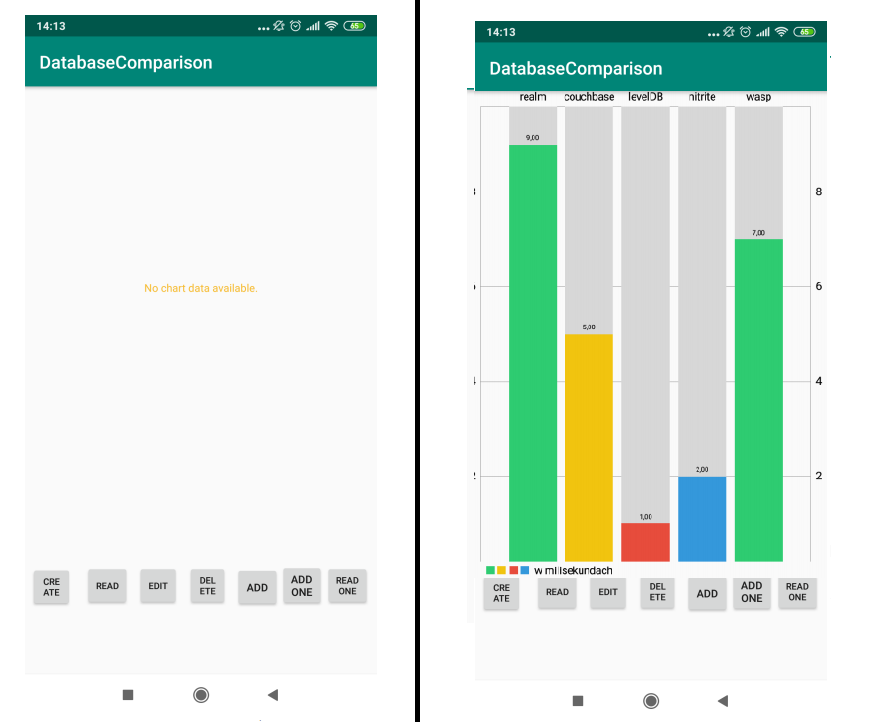

, poszukujacy pracy jako programista
, poszukujacy pracy jako programistaPortfolio
Witam, jestem Michał Maciejewski , poszukujacy pracy jako programista
, poszukujacy pracy jako programistaO mnie
oraz kontakt
oraz kontakt
Portfolio
Umiejetnosci
1 / 4

Portal społecznościowy dla studentów informatyki - aplikacja mobilna IOS
Głównym celem pracy było stworzenie aplikacji mobilnej na system iOS, która ma spełniać rolę forum
dyskusyjnego, z którego będą korzystać tylko i wyłącznie studenci oraz pracownicy Uniwersytetu
Śląskiego. Aplikacja ma służyć do wymiany informacji i poglądów między osobami o podobnych
zainteresowaniach, a także do wymiany materiałów dydaktycznych. Ponadto ma jednoczyć studentów
oraz pracowników Uniwersytetu Śląskiego w celu pomocy dydaktycznej oraz pozwala tworzyć zespoły
naukowe. Jej zadaniem jest również dostarczenie użytkownikom aplikacji, która ułatwi komunikację
między społecznością pracowników Uniwersytetu Śląskiego.
Narzędzia i technologie: iOS SDK, Swift, XCode
Link: git
2 / 4

Bazy NoSQL w aplikacjach mobilnych
Celem pracy jest przedstawienie podstawowych założeń oraz typów baz NoSQL, podział technologii ze
względu na rodzaj modelu danych, omówienie dostępnych rozwiązań na platformie Android oraz
omówienie ich wad i zalet oraz stworzenie aplikacji, dzięki której zostanie przeanalizowana wydajność
wybranych baz NoSQL, w podstawowych operacjach bazodanowych takich jak: tworzenie bazy,
dodawanie rekordu, usuwanie rekordu oraz edytowanie rekordu.
Narzędzia i technologie: Java, Android SDK, Android Studio
Link: git
3 / 4

Gra Wisielec
Aplikacja ta jest prostą grą literową, polegająca na odgadnięciu podanego przez aplikacje wyrazu. Lista
wyrazów przy pierwszym uruchomieniu jest pobierana z pliku tekstowego a następnie zapisana w bazie
Realm. Przy uruchomieniu aktywności gry, losowane jest słowo pokazane użytkownikowi, jako ciąg
podkreślników oraz generowana jest lista liter, po kliknięciu wybranej litery sprawdzane jest czy występuje
w słowie a następnie pojawia się w odpowiednim miejscu w wyrazie zastępując podkreślnik a jeśli nie
występuje to rysowany jest kolejny element wisielca.
Narzędzia i technologie: Java, Android SDK, Android Studio
Link: git
4 / 4

Projekt zaliczeniowy PZ
Projekt zrealizowany w ramach pracy zespołowej, mający na celu zaznajomienie uczestników z pracą grupową opartą o Scrum. Aplikacja ma za zadanie wspomagać kino w obsłudze rezerwacji biletów w kinie, od strony klienta, pracownika oraz kierownika.
Narzędzia i technologie: C#, Windows Forms, SQL, SCRUM
Link: git
Znajomość jezykow
Java
C#
Swift
Html
CSS
SCSS
Javascript
SQL
Znajomość technologii
Asp .NET
IOS
Android

Umiejetnosci
Znajomość SCRUM
Znajomość GITHUB


Michal Maciejewski
Od samego początku edukacji interesowały mnie przedmioty ścisłe, w szczególności królowa nauk – matematyka. W technikum informatycznym zacząłem zabawę z programowaniem, dokładniej z językiem c++ oraz Html+Css. Po zakończeniu nauki na poziomie szkoły średniej wybrałem się na studia, na Uniwersytet Śląski na kierunek Informatyka co zostało zwieńczone tytułem Magister Inżynier. Tematem mojej pracy inżynierskiej było: "Portal społecznościowy dla studentów informatyki - aplikacja mobilna IOS", pracy magisterskiej:"Bazy NoSQL w aplikacjach mobilnych". Na studiach zacząłem zabawę z programowaniem mobilnym(Android - Java oraz iOS - Swift) oraz programowaniem webowym(ASP .Net MVC), ucząc się w wolnym czasie z dostępnych w internecie źródeł.